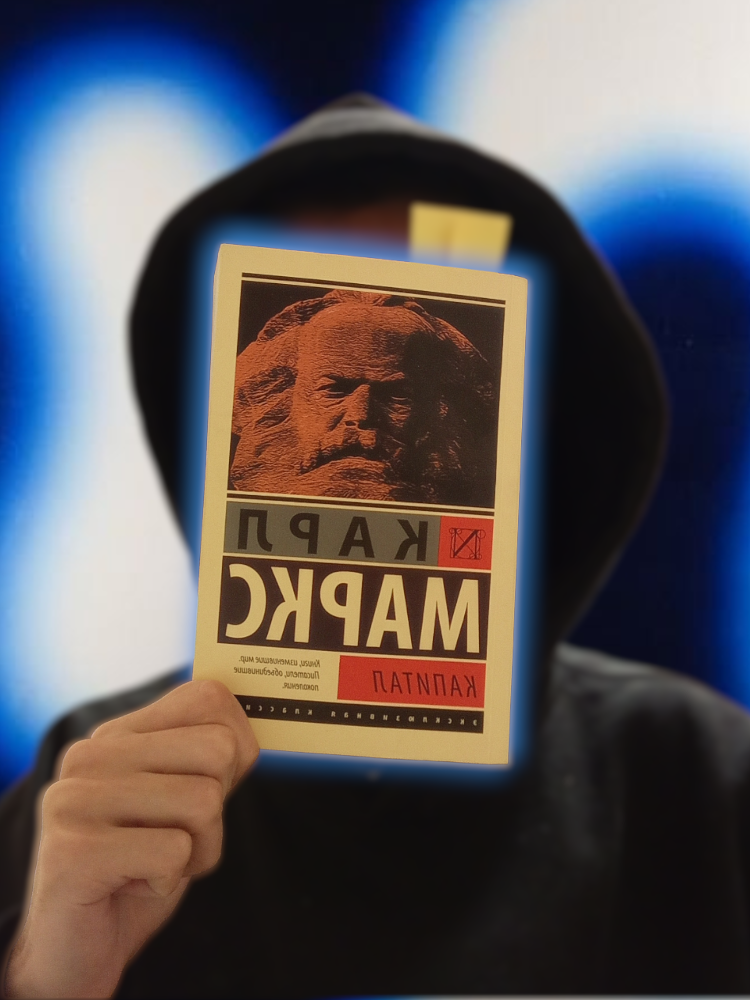

мой результат
Здесь ваш заголовок. Например: «Мой первый рабочий сайт»

Краткая подпись к изображению (можно удалить)
Здесь вы можете описать, как всё начиналось: с чего стартовали, что было непонятно или сложно.
На этом месте расскажите, что в итоге получилось: какой результат увидели, что стало понятнее.
Здесь напишите свой вывод, ощущение или короткое личное наблюдение.Что я сделал
- замените на свой первый шаг;
- замените на свой второй шаг;
- замените на свой третий шаг.